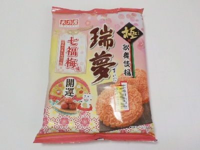
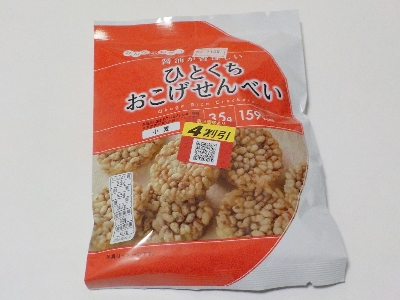
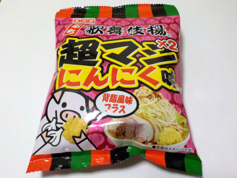
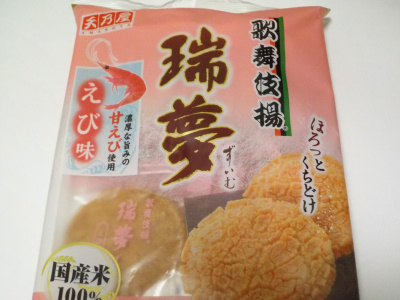
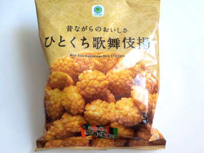

天乃屋の極歌舞伎揚瑞夢七福梅味はおせちの代わりになりそうです。
更新日 : 2025/02/08

縁起の良い七種の味「七福梅味」です。梅・梅酢・昆布・カツオ・塩・みりん・はちみつの7種で開運のようです。お節料理に代わりにこれを食べればとっても安上がりだと思いました。
今の時期は各社で梅味のせんべいが出されていますが、私はこれが一番いいかなと思いました。ただ単に瑞夢が好きなのでそう感じたのかもしれません。
2月なので安売りで税込み192円でした。
東京都武蔵村山市伊奈平2-17-2
更新日 : 2025/02/08

縁起の良い七種の味「七福梅味」です。梅・梅酢・昆布・カツオ・塩・みりん・はちみつの7種で開運のようです。お節料理に代わりにこれを食べればとっても安上がりだと思いました。
今の時期は各社で梅味のせんべいが出されていますが、私はこれが一番いいかなと思いました。ただ単に瑞夢が好きなのでそう感じたのかもしれません。
2月なので安売りで税込み192円でした。
更新日 : 2025/01/18

ポン菓子を固めてせんべいっぽくした商品かなと思ったんですが、しっかりせんべいでした。
なんとなく天乃屋さんの歌舞伎揚っぽい感じがするので、似た感じの調味料の配合かなと思いました。
歌舞伎揚だとお菓子な気分ですが、おこげぜんべいたと食事な感じが少しします。これはお菓子じゃなくてご飯だって思って食べると健康的な気分がしました。
スナック菓子を食事の代わりにしている人に向いているかも？
更新日 : 2023/06/02

一口サイズよりも小さいプチサイズの歌舞伎揚げです。初めてプチサイズを食べましたが、食べ易くていいですね。
超マシマシの味付けで濃い味なので、お酒によく合います。塩分の中和で、お酒をドンドン飲みそうです。
歌舞伎揚げはアレンジしても美味しいですね。
更新日 : 2022/10/14

以前にミニ歌舞伎揚を食べて物足りなかったので、大きい歌舞伎揚を買いました。
歌舞伎揚のようなエビセンのような、どちらとも言えない中間の味でした。両方のいいところが生かされてます。
更新日 : 2022/10/09

小さい歌舞伎揚げです。小さくて、サクサクと軽い歯ごたえで食べ易かったです。
でもちょっと物足りないかな。私は普通の歌舞伎揚げが好きです。
オフィシャルホームページによると、歌舞伎揚げは1960年発売のロングセラー商品だそうです。歌舞伎って名前が付くので、なんとなくもっと古くからあるものかと思っていました。